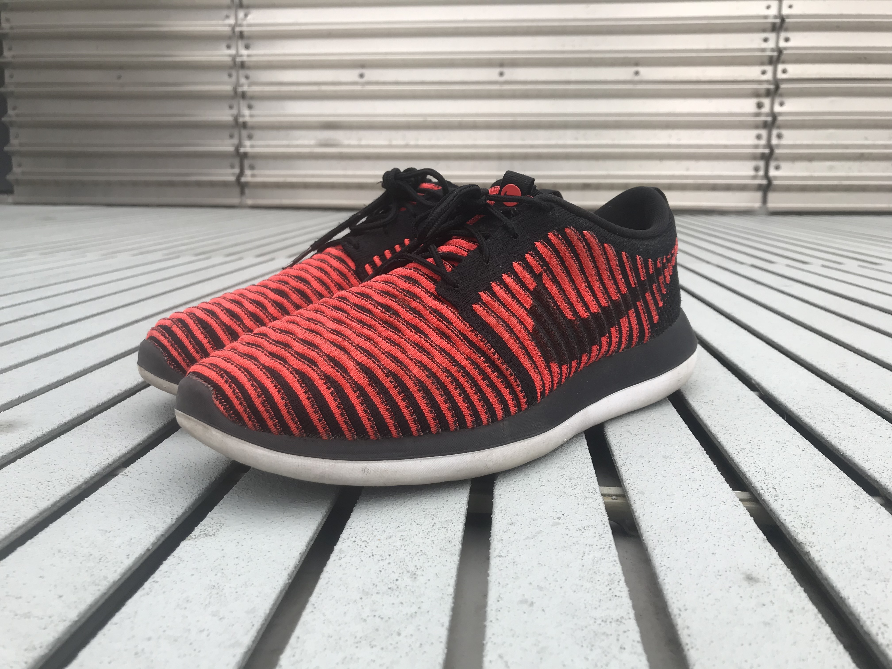

Everyday wear
Adidas NMD C_2
Nike Flyknit Roshe Two
- 
-

-

This website is about my shoes. In this section, I will write about how I started gaining interest in shoes, and how I got this very expensive hobby. I will write about why I think I love shoes so much, and stuff like that.

I try to always try on before buying. My favorite stores are DSW, Nike Store, Adidas Store, Payless Shoes, to name a few. I bought the Adidas NMD_C2s from the official Adidas website, the Nike Flyknit Roshe Twos from www.finishline.com, and the Cole Haan Original Grand Oxfords from DSW in Chicago downtown.
I make sure to clean my shoes using the sppropriate tools every weekend. For the Adidas NMD_C2 shoes, special care needs to be taken as they are made from a suede material. I use a suede brush and eraser regualrly to keep them clean. For the other shoes, I use Kiwi Sneaker cleaner to clean them thoroughly.